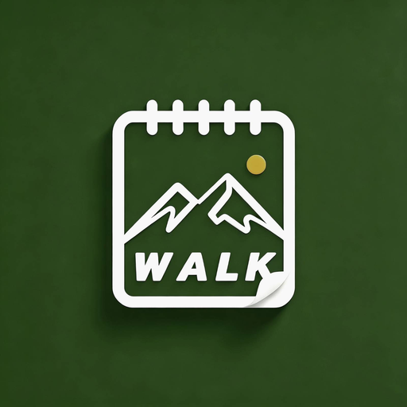

给爱爬山的人，一本安静的徒步日记本
记下每一座山、每一段路、每一次出发时的心情。规划下一次行程，然后看着自己的足迹，一年一年长出来。
纯本地存储
无账号
无广告
不收集任何数据
离线可用
它是什么
不是徒步数据平台，也不是轨迹工具 —— 就是一本你自己的日记本。
是日记本，不是专业工具
不逼你填一堆参数。山名、日期、心情，想写就写；里程、爬升、天气、同行的人都可以留白。重点是你当时怎么想，不是数据多准确。
数据在你自己手里
记录与照片只存在你的设备上。只有你主动配置了自己的网盘，才会同步到你自己的账号 —— App 没有开发者服务器，也不收集、不上传任何使用数据。
上山没信号也照记
完全离线可用。到了山里打开就能写，不用等信号，也不怕断网；回到家再慢慢整理照片和细节。
界面
真实界面 · 演示数据下面是 App 的真实界面（演示数据）。


功能
够用就好，不做多余的事。
徒步记录
山名、日期、里程、用时、爬升、难度、心情、天气、同行人，还有一段想写多少写多少的小日记和照片。
出行计划
先定好下次去哪，到日子早上提醒你；过期了可以一键「完成」转入记录，也可以直接延期改期。
徒步足迹
每个月一张打卡日历，去过哪天一眼看清；同一格点开就能回看那天的记录，还有「那年今日」提示。
山册
去过的山自动汇成一册，按海拔高低着色，一座山一张卡 —— 翻起来像在数自己的收藏。
分享卡
把一次行程生成一张干净的图片，发给朋友或者留着自己收藏。
年度回顾与备份
年底回顾这一年走过的路；随时一键导出完整备份（含照片），换手机不丢。
更新日志
最新 v1.2.2.8App 内「关于应用」也能看到同一份内容。
v1.2.2.8
- 红色只留给会删数据的操作 —— 以前「完成」「编辑」「保存」「确定」「分享」这些普通按钮跟「删除」是同一种红，光看颜色分不出哪个动作有风险；现在它们回到中性玻璃，红色只属于删除。
- 列表里的删除按钮变轻了 —— 从红框按钮改成一枚淡红小图标：一列几十行红框会让红色失去警示力，现在一眼扫过去是干净的，需要删的时候又找得到。
- 《隐私政策》补充了联系邮箱 —— 反馈问题可以直接发邮件，不必绕到 GitHub。
- 同一版的第 7 号版本 —— 删除类操作的红色语义、小屏标题挤成竖排、时间显示格式、输入框玻璃化，见下方历史版本。
v1.2.2.7
- 删除类操作现在才是红色 —— 以前「保存」「编辑」这些普通按钮和「删除」是同一种红，看不出哪个动作有风险。
- 小屏手机上页面标题不再被挤成竖排 —— 位置不够时，右侧按钮会自己换到标题下方一行。
- 编辑记录的时间显示更清爽 —— 「2026-01-05T08:30」变成「2026-01-05 08:30」。
- 编辑弹窗的输入框统一成玻璃质感 —— 空白字段的提示文字也更清楚好读。